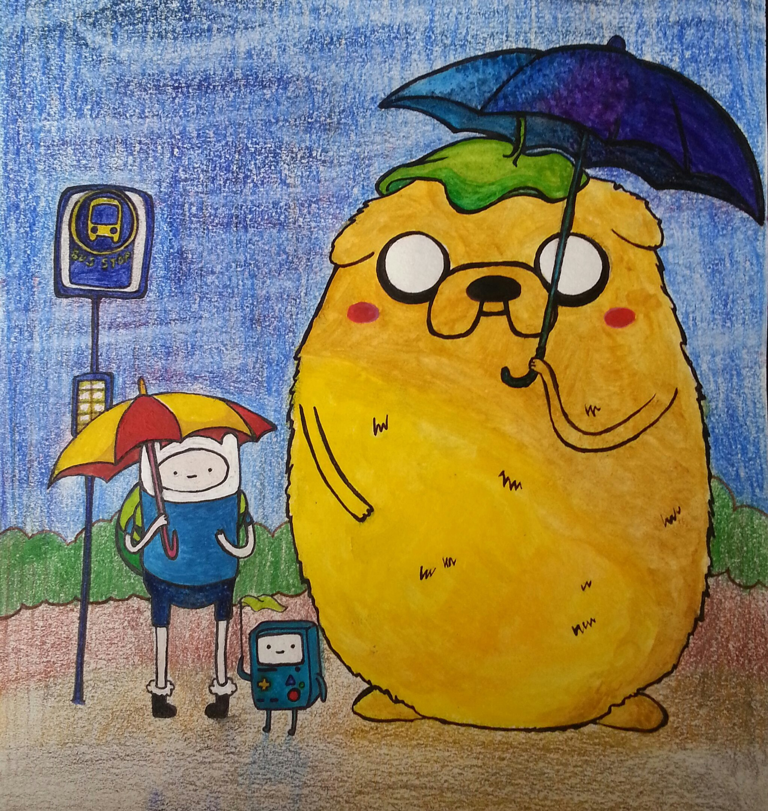

|
|
ПОРТРЕТЫ НА ЗАКАЗ ПО ФОТОГРАФИИ
Студия PAINBOX создает портреты на заказ во Владивостоке по вашим фотографиям.
Мы можем сделать портрет точь в точь как на фотографии, можем добавить необычный фон или декор по вашему желанию, также сделать коллаж или объединить фотографии. Мы работаем в разных стилях и создаем оригинальные работы, а самое главное – мы делаем это с любовью! Портрет – отличный подарок на любой праздник! Его можно подарить родителям на годовщину свадьбы, другу на день рождения, любимому человеку на 14 февраля, начальнику на юбилей. Такой необычный подарок обязательно удивит, а главное понравится его получателю! Почему вам стоит обратиться именно к Paintbox:
• Высокое качество работ
• Мы не пользуемся печатью на холсте или другими технологиями, поэтому
портрет будет 100% ручной работой
• Выполнение заказа в течение 5 дней, а также возможное срочное изготовление портрета
• Разнообразные техники рисования
• Доступные цены, а также всевозможные скидки и акции
Наши услуги.
|
| |
|
Среди современных видов техник исполнения портретов по фотографии очень популярной и стильной являюся работы карандашом. Четкость линий, выразительность, ясность объема и формы - достоинства этой техники. |
| |
|
Пуантилизм является одним из интереснейших и необычных направлений живописи. Это такая манера письма картин раздельными мазками правильной, точечной или прямоугольной формы. Работа выполнена с помощью линера. |
| |
|
Мы создаем различные оригинальные коллажи из нескольких фотографий. Работа выполена акварелью, капилярными маркерами-ручками, линером. |
| |
Семейный портрет станет отличным подарком на годовщину свадьбы родителей и великолепно впишется ваш интерьер. Работа выполнена акварелью, акриловыми красками и линером. |
| |
|
Мы можем разнообразить ваш портрет оригинальным фоном или добавить необычные графические элементы по вашему желанию. Работа выполена акварелью и гуашью. |
| |
 |
Также мы рисуем ваших любимых персонажей мультфильмов и игр. Работа выполена акварельными карандашами, капилярными ручками-маркерами и линером. |
| |
|
Классические портреты без добавления дополнительных деталей. Используются акварель, акриловые краски, акриловые карандаши и линер. |
|